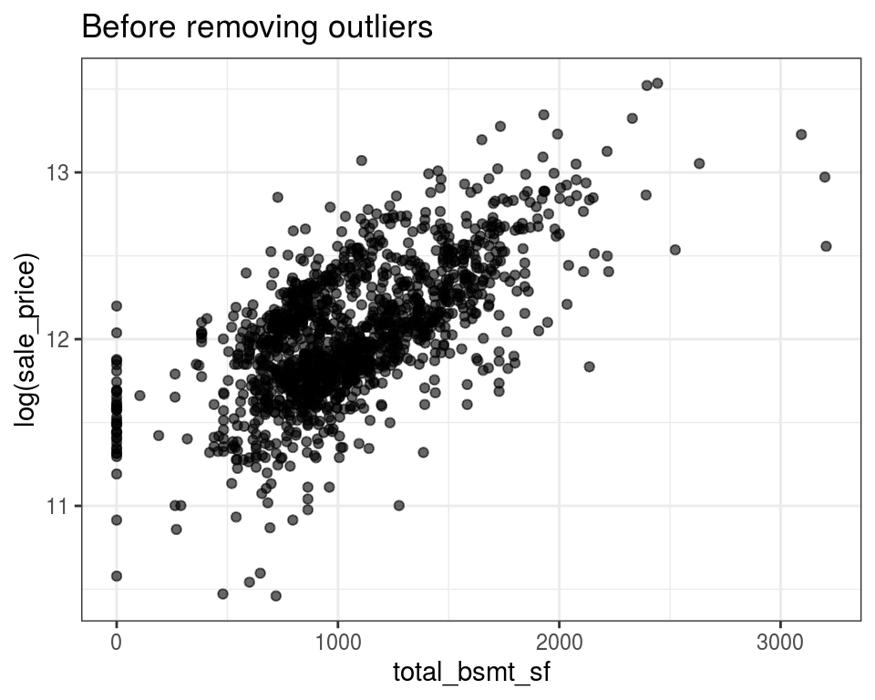
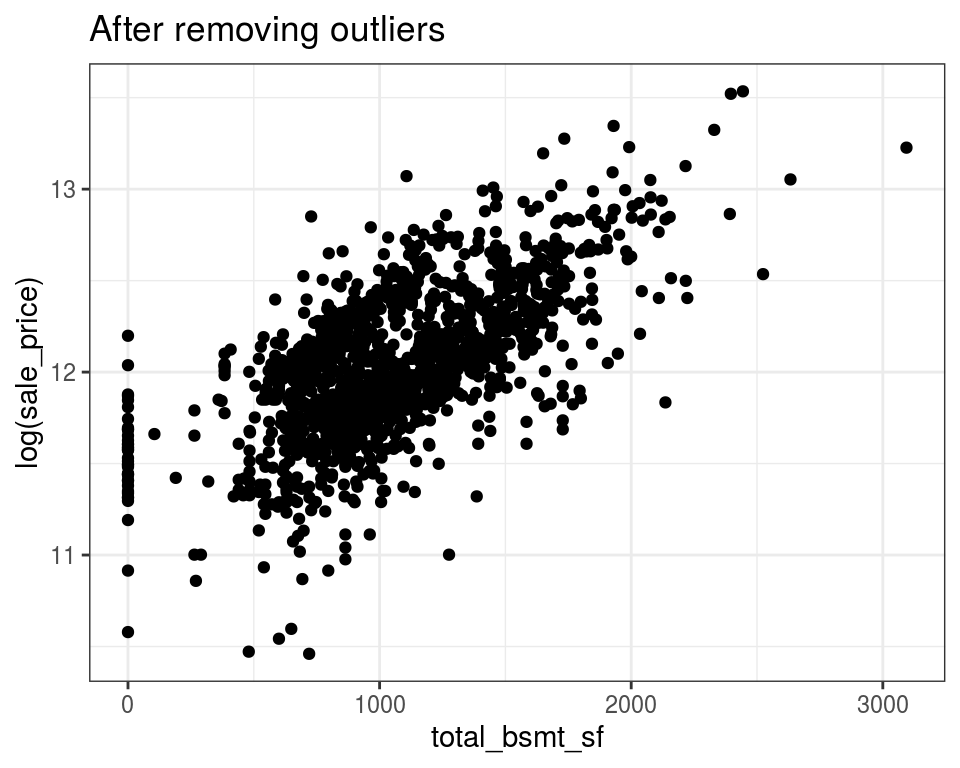
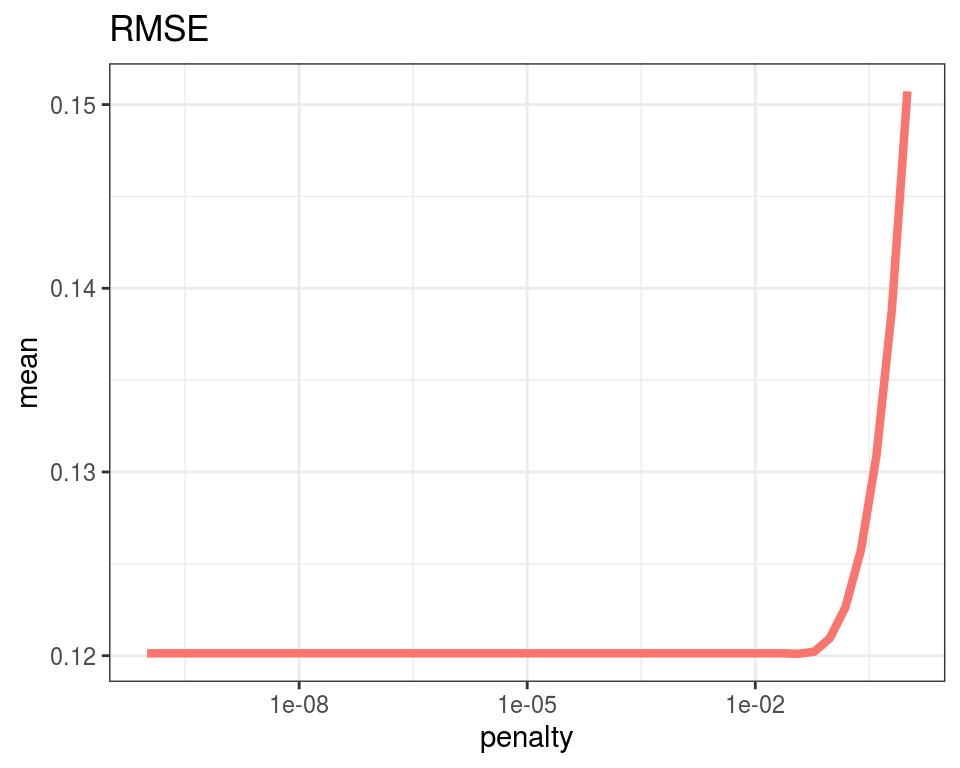

hw6
2주 전에 전처리 하나만으로 점수가 엄청 오른 것을 확인 할 수 있었다. 이전 전처리 후 oulier의 제거와 학습을 통해 좀 더 예측력을 올려보자!!!!
outlier를 제거하기 위해 데이터를 다시 불러와서 시작한당 준비단계….
[1] "_posts" "_site.yml"
[3] "about.Rmd" "blog_posts.Rmd"
[5] "docs" "index.Rmd"
[7] "Portfolio.Rmd" "postcard.R"
[9] "project.Rproj" "README.md"
[11] "sample_submission.csv" "test.csv"
[13] "tobi.jpg" "train.csv"
[15] "프사.jpg" gr_liv_area 변수에 있는 outlier를 확인해보자!
Any thoughts about right 4 points?
4500이상 되는 값들이 유독 튀는 것을 확인 할 수 있다. 4500 이상 되는 2개의 값을 필터 씌운 뒤에 다시 train data로 넣어보자 %<>%
outlier를 지우니 추세가 눈에 확 들어온다!

total_bsmt_sf가 3000 이상 되는 값들이 튀는 것처럼 보인다.
outlier점 3개중에 2개를 지웠다. (왜 로그값이 13보다 작은 값들을 지우셨는지는 좀 더 생각해보자)

잘 지워졌당~!
1230보다 큰 3개의 점이 거슬린다.. 저걸 지워보쟈
잘 지워졌구나 ~!
이제 거슬리는 outliers을 지웠으니 학습을 통해 예측력을 높여보자 !!!
1번에서 outliers를 제거한 train set을 이용해서 training 해볼 것이다.!
먼저 outlier를 제거한 train과 test를 다시 전처리해준다.
[1] "id" "ms_sub_class" "ms_zoning" "lot_frontage"
[5] "lot_area" "street" "alley" "lot_shape"
[9] "land_contour" "utilities" Data Recipe
Inputs:
role #variables
outcome 1
predictor 80
Training data contained 2912 data points and 2912 incomplete rows.
Operations:
Variables removed id [trained]
Log transformation on sale_price [trained]
Mode Imputation for ms_zoning, street, alley, ... [trained]
Dummy variables from ms_zoning, street, alley, ... [trained]
Mean Imputation for ms_sub_class, lot_frontage, ... [trained]
Centering and scaling for ms_sub_class, lot_frontage, ... [trained]juice the all_data2 and splitWe are done for preprocessing. Let’s split the data set.
전처리가 다 끝났으면 이제 어떻게 학습할 것인지 알아보자
train set을 validation set으로 다시 분리 시킬 것이다. 70%는 학습용으로 남겨놓아라. 30%는 평가용!!
이것이 실제로 어떻게 나눠져 있는지 확인하려면
in_id : 학습 할 때 사용하는 것 out_id : 평가 할 때 사용하는 것
[1] 1 2 3 4 5 6 9 11 13 14 15 16
[13] 18 19 21 22 23 24 25 26 28 30 31 32
[25] 33 34 35 36 37 38 39 40 42 45 46 50
[37] 51 52 54 56 58 61 62 64 65 66 67 68
[49] 69 71 72 73 74 78 80 82 83 85 86 87
[61] 88 90 91 92 94 96 97 99 100 102 104 105
[73] 106 108 109 110 111 112 114 115 117 119 120 121
[85] 122 124 125 126 128 130 131 132 133 135 136 137
[97] 138 140 141 142 143 144 145 146 147 149 150 151
[109] 152 153 157 158 159 160 161 162 163 165 168 169
[121] 170 171 173 176 180 181 182 183 184 186 188 189
[133] 190 193 194 195 196 197 200 201 202 203 204 206
[145] 207 208 209 210 211 212 213 214 215 216 217 218
[157] 219 220 221 222 223 224 225 228 229 231 233 234
[169] 236 237 238 239 242 243 244 245 247 248 249 250
[181] 252 253 255 256 257 259 260 261 263 264 265 266
[193] 267 268 269 270 271 272 273 274 277 280 281 283
[205] 284 286 287 288 289 290 291 292 293 296 297 298
[217] 299 301 303 304 308 309 310 311 314 315 316 318
[229] 319 322 323 324 326 328 329 330 331 332 333 334
[241] 335 336 337 338 343 345 346 347 348 349 352 353
[253] 354 355 356 357 358 359 363 364 366 367 368 370
[265] 371 372 375 376 377 378 379 380 381 382 383 384
[277] 386 389 391 393 394 397 398 399 401 404 405 407
[289] 408 409 410 411 412 413 414 415 416 417 418 419
[301] 421 422 423 424 425 426 428 429 431 433 434 435
[313] 437 438 439 440 441 443 444 447 448 450 452 455
[325] 456 457 459 460 462 463 464 466 467 468 469 470
[337] 473 474 476 477 478 479 480 482 483 484 486 487
[349] 488 490 493 494 496 497 498 499 500 501 502 505
[361] 506 507 508 509 512 514 515 516 517 518 519 520
[373] 521 524 525 526 527 528 529 530 531 532 533 534
[385] 536 537 539 540 541 542 544 545 546 547 548 549
[397] 552 553 554 555 556 557 558 559 560 561 562 563
[409] 564 565 566 567 568 570 571 572 573 574 575 576
[421] 578 579 582 584 585 586 587 588 589 590 591 592
[433] 593 594 595 596 597 598 603 604 605 610 612 613
[445] 614 615 617 618 619 620 621 623 626 627 629 630
[457] 631 633 634 635 636 638 640 641 643 644 646 647
[469] 648 650 652 654 656 657 658 659 662 663 665 668
[481] 672 675 676 677 679 684 685 688 689 690 691 692
[493] 693 694 695 696 697 698 699 700 701 702 704 705
[505] 706 707 708 709 711 715 717 718 719 721 723 725
[517] 727 730 731 733 734 735 736 738 740 741 744 745
[529] 746 747 748 749 750 751 752 753 755 756 757 759
[541] 760 761 763 765 766 767 770 771 772 773 774 775
[553] 776 777 779 780 781 783 786 787 788 789 791 792
[565] 794 795 796 798 799 800 802 803 804 805 807 810
[577] 811 813 815 816 817 818 819 820 822 823 824 825
[589] 826 828 829 830 832 834 835 837 838 839 840 842
[601] 845 846 847 848 849 850 851 852 853 854 856 857
[613] 858 859 860 861 862 863 864 865 867 868 869 871
[625] 872 874 875 876 877 879 880 882 885 888 889 890
[637] 891 892 895 896 897 898 901 902 905 906 910 912
[649] 913 914 916 917 918 920 921 922 923 924 926 927
[661] 929 930 931 935 936 937 938 940 941 942 943 948
[673] 949 950 951 952 953 954 955 957 958 959 960 962
[685] 964 965 966 968 969 971 972 975 976 977 978 981
[697] 983 984 985 987 988 991 993 994 995 996 997 998
[709] 999 1001 1002 1003 1005 1008 1010 1011 1013 1014 1016 1017
[721] 1018 1020 1021 1022 1024 1026 1027 1029 1030 1031 1033 1034
[733] 1035 1038 1039 1040 1041 1042 1043 1045 1047 1048 1049 1050
[745] 1053 1054 1055 1056 1057 1059 1060 1061 1062 1063 1064 1066
[757] 1067 1068 1069 1070 1071 1072 1073 1075 1076 1077 1079 1080
[769] 1081 1082 1083 1086 1088 1089 1090 1092 1095 1096 1098 1099
[781] 1100 1101 1102 1103 1104 1105 1107 1108 1110 1111 1112 1113
[793] 1117 1119 1121 1123 1124 1125 1126 1127 1128 1129 1131 1134
[805] 1135 1136 1137 1138 1140 1141 1142 1143 1146 1151 1152 1154
[817] 1155 1156 1158 1159 1160 1161 1162 1163 1165 1169 1171 1173
[829] 1177 1180 1181 1183 1184 1185 1186 1187 1188 1190 1191 1193
[841] 1194 1196 1198 1199 1200 1201 1202 1203 1205 1207 1209 1210
[853] 1211 1213 1214 1216 1217 1218 1220 1223 1224 1225 1226 1228
[865] 1229 1230 1231 1232 1233 1234 1236 1240 1241 1242 1243 1244
[877] 1245 1247 1248 1249 1250 1251 1252 1254 1255 1256 1262 1263
[889] 1265 1266 1267 1268 1269 1270 1272 1273 1275 1276 1278 1279
[901] 1280 1283 1284 1285 1286 1287 1288 1289 1290 1291 1292 1294
[913] 1295 1297 1300 1304 1306 1307 1308 1309 1311 1312 1314 1315
[925] 1316 1320 1321 1322 1324 1327 1328 1329 1330 1331 1333 1334
[937] 1335 1337 1338 1339 1340 1341 1342 1343 1346 1347 1349 1350
[949] 1351 1352 1354 1355 1357 1360 1361 1362 1363 1365 1368 1369
[961] 1370 1371 1372 1374 1375 1376 1377 1379 1383 1384 1386 1388
[973] 1389 1390 1391 1392 1394 1395 1398 1399 1400 1401 1402 1404
[985] 1405 1406 1407 1409 1410 1411 1413 1414 1415 1416 1421 1422
[997] 1423 1424 1425 1428 1429 1430 1432 1433 1434 1435 1436 1437
[1009] 1438 1440 1441 1442 1446 1448 1450 1451 1452 1453[1] 1 2 3 4 5 6이제 tune을 해야하는데 Elastic net에서 \(\alpha\)(=mixture),penalty(=lambda)
ridge regression: Mixture=0
penalty는 아직 안정했음 : tune 할 것이다.
tune_spec: ridge regression에 penalty는 아직 정해지지 않은 상태
glmnet: elastic net을 사용하기 위한 packaages
param_grid : 후보가 될 수 있는 람다의 값이 들어있음(하나하나 학습 시킬 것)0이 없고, 1이 무한대인 상태!
grid_regular(levels = 50) : 0에서 1까지 중에 균등하게 50개를 뽑은 것
평가하기 위한 모델을 만들기
어떤 것이 좋은지 평가하는 방식은 rmse(soot mean square error)를 이용하겠다.
-> tune_result에 각 람다 값에 대한 퍼포먼스가 담기게 된다.
0.888 sec elapsedcollect_metrics(): 퍼포먼스가 담긴 것들을 모아봐라
mean 값: rmse값(validation에서 나온 것 들의 평균)
우리의 목표: mean 값이 최소가 되는 penalty값을 구하는 것
# A tibble: 50 x 7
penalty .metric .estimator mean n std_err .config
<dbl> <chr> <chr> <dbl> <int> <dbl> <chr>
1 1.00e-10 rmse standard 0.120 1 NA Preprocessor1_Mode…
2 1.60e-10 rmse standard 0.120 1 NA Preprocessor1_Mode…
3 2.56e-10 rmse standard 0.120 1 NA Preprocessor1_Mode…
4 4.09e-10 rmse standard 0.120 1 NA Preprocessor1_Mode…
5 6.55e-10 rmse standard 0.120 1 NA Preprocessor1_Mode…
6 1.05e- 9 rmse standard 0.120 1 NA Preprocessor1_Mode…
7 1.68e- 9 rmse standard 0.120 1 NA Preprocessor1_Mode…
8 2.68e- 9 rmse standard 0.120 1 NA Preprocessor1_Mode…
9 4.29e- 9 rmse standard 0.120 1 NA Preprocessor1_Mode…
10 6.87e- 9 rmse standard 0.120 1 NA Preprocessor1_Mode…
# … with 40 more rowsmixture은 지금 없으니까(ridge) 잠시 나가있어
[1] 0.03727594tune_result안네 penalty대비 rmse의 값을 보여주는 plot

show_best(): mean값을 최소로 만들어주는 값들의 몇개를 보여준다
# A tibble: 5 x 7
penalty .metric .estimator mean n std_err .config
<dbl> <chr> <chr> <dbl> <int> <dbl> <chr>
1 3.73e- 2 rmse standard 0.120 1 NA Preprocessor1_Model…
2 1.00e-10 rmse standard 0.120 1 NA Preprocessor1_Model…
3 1.60e-10 rmse standard 0.120 1 NA Preprocessor1_Model…
4 2.56e-10 rmse standard 0.120 1 NA Preprocessor1_Model…
5 4.09e-10 rmse standard 0.120 1 NA Preprocessor1_Model…Set mixture is equal to zero refering the Ridge regression in glmnet since the
위에서 구한 값으로 train2를 학습시킨다.
# A tibble: 111 x 3
term estimate penalty
<chr> <dbl> <dbl>
1 (Intercept) 12.0 0.0373
2 lot_frontage 0.0109 0.0373
3 lot_area 0.0178 0.0373
4 overall_qual 0.0554 0.0373
5 overall_cond 0.0360 0.0373
6 year_built 0.0296 0.0373
7 year_remod_add 0.0195 0.0373
8 mas_vnr_area 0.00369 0.0373
9 bsmt_fin_sf1 0.0270 0.0373
10 bsmt_fin_sf2 0.00824 0.0373
# … with 101 more rows# A tibble: 6 x 1
.pred
<dbl>
1 11.7
2 12.0
3 12.1
4 12.2
5 12.2
6 12.0오늘 배운 것은 train을 둘로 쪼개서 하나는 가상의 test set으로 하고 하나는 train으로
평가하는 validation set이 test set과 비슷하면 좋겟지만, 비슷하지 못할 경우를 대비해서 cross validation을 진행한다.!!
방법은 validation set을 여러개로 만드는 것인ㄷㅔ,, v=10: train data를 10개로 나누되, saleprice가 골고루 나눠서 담길 수 있도록 하라.
알파와 람다를 정하지 않고 tune을 하라. 두가지를 고르는 것이니까 mixture도 tune으로 해주기
각 fold에 대해서 가능한 후보군 집합이 있다. rmse말고 다른 (mae)것도 함 께 볼 수 있다 .
에러남[1] 0.03727594NULL결과에 mixture=0이 나오면 regression방법으로 lasso 보다 ridge를 사용하는 것이 예측력에 더 좋다는 것을 확인 할 수 있음
에러# A tibble: 5 x 7
penalty .metric .estimator mean n std_err .config
<dbl> <chr> <chr> <dbl> <int> <dbl> <chr>
1 3.73e- 2 rmse standard 0.120 1 NA Preprocessor1_Model…
2 1.00e-10 rmse standard 0.120 1 NA Preprocessor1_Model…
3 1.60e-10 rmse standard 0.120 1 NA Preprocessor1_Model…
4 2.56e-10 rmse standard 0.120 1 NA Preprocessor1_Model…
5 4.09e-10 rmse standard 0.120 1 NA Preprocessor1_Model…Set mixture is equal to zero refering the Ridge regression in glmnet since the 위에서 구한 값으로 train2를 학습시킨다.
# A tibble: 111 x 3
term estimate penalty
<chr> <dbl> <dbl>
1 (Intercept) 12.0 0.0373
2 lot_frontage 0.0109 0.0373
3 lot_area 0.0178 0.0373
4 overall_qual 0.0554 0.0373
5 overall_cond 0.0360 0.0373
6 year_built 0.0296 0.0373
7 year_remod_add 0.0195 0.0373
8 mas_vnr_area 0.00369 0.0373
9 bsmt_fin_sf1 0.0270 0.0373
10 bsmt_fin_sf2 0.00824 0.0373
# … with 101 more rows# A tibble: 6 x 1
.pred
<dbl>
1 11.7
2 12.0
3 12.1
4 12.2
5 12.2
6 12.0For attribution, please cite this work as
hanbyeol (2021, April 3). ★: 전처리후 oulier 제거와 training. Retrieved from https://hanbyeol1322.github.io/skkustar/posts/2021-04-03-hw6/
BibTeX citation
@misc{hanbyeol2021전처리후,
author = {hanbyeol, },
title = {★: 전처리후 oulier 제거와 training},
url = {https://hanbyeol1322.github.io/skkustar/posts/2021-04-03-hw6/},
year = {2021}
}